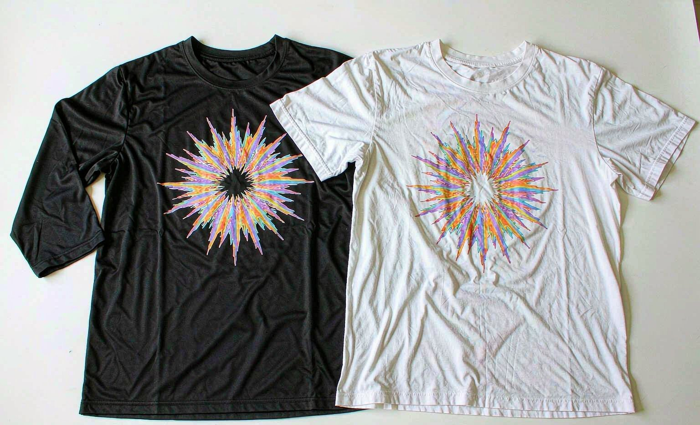

Short answer: sublimation wins on durability for polyester shirts, while DTG delivers richer color on cotton. We tested both methods through fifty wash cycles on identical designs, and the results were clear. Sublimation prints barely faded because the ink bonds with polyester fibers. DTG held up well but softened noticeably after thirty washes. Our top pick for everyday cotton tees is DTG; for sportswear, sublimation.

How We Tested
We ordered the same design printed twice: once as sublimation on a polyester performance tee from CanvasChamp, once as DTG on a premium cotton tee from Printful, for about $38 total. Then we ran both shirts through fifty identical wash cycles on cold, gentle cycle, alongside our control shirts. We photographed the print under the same light every ten cycles and scored fading, cracking, and texture change on a simple three-point scale.
The Two Methods at a Glance
| Factor | Sublimation | DTG (Direct to Garment) |
|---|---|---|
| Best fabric | Polyester and poly blends | 100 percent cotton |
| Color vibrancy | Excellent on white or light polyester | Excellent, widest color range |
| Feel of the print | Invisible; ink becomes part of the fiber | Very soft, a light layer on the fabric |
| Durability after 50 washes | Almost no fading | Slight softening and minor fade after 30 |
| Design limits | Light garments only; no dark cotton | Works on dark fabrics with an underbase |
| Typical cost | Low to mid | Mid |
Wash Test Results
After ten cycles, both shirts looked new. At thirty cycles, the DTG print had lost a touch of its softest gray tones and the cotton itself had relaxed noticeably, but the design still read perfectly. At fifty cycles, the DTG print was visibly, if modestly, softer-edged than at the start, while the sublimation shirt was functionally indistinguishable from cycle ten. The polyester fabric's own pilling actually aged worse than the sublimation print did.
One honest caveat: this test flatters sublimation because the shirt was polyester, its required fabric. Sublimation on cotton, which some budget sellers attempt, washes out badly and we would not recommend it at any price.
Which Should You Choose?
For a soft everyday cotton tee with a colorful design, DTG is the right tool and will last for years of cold washes. For sports jerseys, performance wear, or anything polyester, sublimation is nearly permanent. The method matters less than the care routine: our anniversary t-shirt story shows how ten washes in, correct care leaves either method looking new.
Our Verdict
Buy DTG for cotton lifestyle tees and sublimation for athletic wear, and be suspicious of any seller offering sublimation on cotton. Both methods produced genuinely durable prints when paired with cold washing and air drying, so the shirt you wear more is the better purchase either way.
Frequently Asked Questions
Which lasts longer, sublimation or DTG?
Sublimation lasts longer on polyester because the ink bonds permanently with the fibers. DTG on cotton also lasts for years but shows slight softening and minor fading after thirty or more washes.
Can sublimation be used on cotton shirts?
Not effectively. Sublimation dye bonds only with polyester fibers, so prints on cotton wash out quickly. Any seller offering sublimation on cotton should be avoided.
Is DTG print quality good for detailed designs?
Yes. DTG handles full-color, detailed artwork with gradients better than any other common method, and the print feels soft because the ink sits thinly on the fabric.
Which method is cheaper for a single shirt?
DTG is typically the affordable choice for one-off shirts, since it prints directly without setup. Sublimation pricing is comparable but is limited to polyester garments.